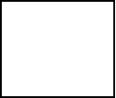
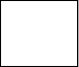

| HOME >> Tutorials >> Tutorial 17: Shading |
Introduction:
Shading really makes elements of your picture stand out. It also adds some "color" to you pictures. Do you remember back in Tutorial 15, where I showed you how to shade using many lines? Well, now I'm going to show you the true way of shading, and using it to make cool designs. In this tutorial, you will have to have some background in Algebra to be able to fully understand some concepts, but that shouldn't be a problem because you wouldn't have a graphing calculator if you haven't taken Algebra, yet.
New Commands:
| Shade( | Shades in between a defined upper and lower bound with different patterns and patres |
Shade(lowerfunc,upperfunc[,Xleft,Xright,pattern,patres])
**Note: I highly recommend that you thoroughly go over the further definition of Shade( because it has some information there that I will not explain here in the main tutorial. I might use some words or phrases that you may not know or understand and are explained there.
The Codes:
There will be several different codes showing the different usages of Shade(. This first code will show you how to shade the entire screen. For right now, since we aren't using any Y= type of functions, will still use the same values for the window variables.
| : | For AShell, SOS, and TI-Explorer |
| AxesOff | Turns the graph axes off |
| FnOff | Deselects all the Y= functions |
| 0 |
Stores Xmin as 0 |
| 94 |
Stores Xmax as 94 |
| 0 |
Stores Ymax as 0 |
| -62 |
Stores Ymin as -62 |
| ClrDraw | Clears the graph screen of all drawings |
| Shade(-62,0 | Shades the entire screen from Y=-62 to Y=0 |
| Text(31,25,"IT IS SHADED | Writes "IT IS SHADED" |
| Pause | Suspends program and waits for user to press |
| ClrDraw | Clears the graph screen of all drawings |
| Pause | Suspends program and waits for user to press |
| Shade(-62,0,0,94,3,4 | Shades the screen with negatively-sloped lines at every 4th pixel |
press   press
 press 
As you can see this program shades the whole screen, and then displays "IT IS SHADED," while the program is paused. Then when the user presses  , it clears the screen. The user then has to press
, it clears the screen. The user then has to press  again and then the program shades the entire screen with negatively-sloped lines shaded at every 4th pixel. I had to put the Xleft and Xright boundaries only because I wanted to set the pattern and patres. You must set those two boundaries if you want to set the pattern and patres. The only problem that I have with Shade( is that it draws the lower and upper bounds also. In cases where I don't want the upper and lower bounds drawn, I add two Line( commands that will erase those drawn bounds. Now, I want you to play around a little bit with the shading...change the boundaries, pattern, and patres to see which designs you like. Once you're done, we're going to go on to shading with Y= functions, and we're going to have to change our window variables.
again and then the program shades the entire screen with negatively-sloped lines shaded at every 4th pixel. I had to put the Xleft and Xright boundaries only because I wanted to set the pattern and patres. You must set those two boundaries if you want to set the pattern and patres. The only problem that I have with Shade( is that it draws the lower and upper bounds also. In cases where I don't want the upper and lower bounds drawn, I add two Line( commands that will erase those drawn bounds. Now, I want you to play around a little bit with the shading...change the boundaries, pattern, and patres to see which designs you like. Once you're done, we're going to go on to shading with Y= functions, and we're going to have to change our window variables.
| : | For AShell, SOS, and TI-Explorer |
| AxesOff | Turns the graph axes off |
| FnOff | Deselects all the Y= functions |
| -360 |
Stores Xmin as -360 |
| 360 |
Stores Xmax as 360 |
| 5 |
Stores Ymax as 5 |
| -5 |
Stores Ymin as -5 |
| ClrDraw | Clears the graph screen of all drawings |
| Shade(-10,sin(x | Shades underneath the sine of X |
| Text(50,20,"PUT TITLE HERE | Writes "PUT TITLE HERE" |
I sometimes use this to make an opening screen from my programs. The sine function makes it look as if I shaded in a hill and I just put my text somewhere in the shaded region. You must set the window variables to what I have above for the sine function to come out correctly. I know above I said that I didn't like that Shade( drew the upper and lower bounds, but in this case, it's really helpful. We do not have to put "sin(x)" in Y=, because the command draws it for us. Next, I show you how shade in a square, like we did back in Tutorial 15.
| : | For AShell, SOS, and TI-Explorer |
| AxesOff | Turns the graph axes off |
| FnOff | Deselects all the Y= functions |
| 0 |
Stores Xmin as 0 |
| 94 |
Stores Xmax as 94 |
| 0 |
Stores Ymax as 0 |
| -62 |
Stores Ymin as -62 |
| ClrDraw | Clears the graph screen of all drawings |
| Shade(-45,-20,15,40 | Shades in a 25x25 pixel squre |
| Line(0,-45,94,-45,0 | Erases the bottom line drawn by shade |
| Line(0,-20,94,-20,0 | Erases the top line drawn by shade |
| Pause | Suspends program and waits for user to press |
| ClrDraw | Clears the graph screen of all drawings |
| Shade(-45,-20,15,40,4,3 | Shades square with the specified patterns and patres |
| Line(0,-45,94,-45,0 | Erases the bottom line drawn by shade |
| Line(0,-20,94,-20,0 | Erases the top line drawn by shade |
 press
press 
This is once again where I hate when Shade( draws the upper and lower bound because it makes you add command lines to delete the lines that it drew. I wish there was a way to turn off drawing the boundaries. So in this code, shade draws the box shaded in, along with the boundaries, and then we have to add two Line( commands to erase the unwanted to lines. In the next and final code, I will show you how to shade in a circle. Shading in a circle isn't as obvious as shading in lines or other functions. I actually emailed TI to ask them how to shade in a circle.
| : | For AShell, SOS, and TI-Explorer |
| AxesOff | Turns the graph axes off |
| FnOff | Deselects all the Y= functions |
| 0 |
Stores Xmin as 0 |
| 94 |
Stores Xmax as 94 |
| 0 |
Stores Ymax as 0 |
| -62 |
Stores Ymin as -62 |
| ClrDraw | Clears the graph screen of all drawings |
| Circle(47,-31,30 | Draws a circle centered at (47,-31) and radius of 30 |
| Pause | Suspends program and waits for user to press |
| Shade(-(30²–(X–47)² )–31, | Shades in the circle with positively-sloped |
| (30²–(X–47)² )–31,17,77,4,6) | lines at every sixth pixel |
press 

To shade a circle: Shade(-(r²–(x–h)²)+k,(r²–(x–h)²)+k[,Xleft,Xright,pattern,patres]), where "r" is the radius of the circle, "h" is the x-coordinate of its center, and "k" is the y-coordinate of its center. The whole reason why I showed you this, is because shading a circle is a lot different than shading other things. As you should know already, Shade( works with functions. It's easy to figure out the equation of a line, or a parabola (that's just basic algebra), but a circle is like the end of Algebra II. A circle in the mathematical sense, is a type of conic. I'm going to give a quick math lesson here. The equation for a circle is: (x–h)² + (y–k)² = r², but the problem is that all functions have to be set equal to y. If you set the equation for a circle equal to y, you'll get what you need to put in for Shade(.
(x–h)² + (y–k)² = r²
(y–k)² = r² – (x–h)²
y–k = ± (r² – (x–h)²)
y = ± (r² – (x–h)²) + k, which is the equation that you put in Shade(. I added the "17,77,4,6" part just to show you how everything works. I hope you've understood everything that I have gone over so far. If you haven't taken Algebra II or gone over conics in your math class, it might be a little difficult. But as long as you've had algebra, you should be all right.
Conclusion:
We are officially half way through v2.0!!! With all the commands and tricks that I've taught you in the past six tutorial lessons, including this one, you should be able to make a really good picture on the graph screen. However, that's not what we're going to do in the next tutorial. Actually, there are three more Draw commands that I'm going to teach you first. These commands really aren't necessary to make pictures like the commands that we've gone over so far, but I decided to add them anyway.
If you do not understand a particular part in this lesson, have suggestions, or find any problems please contact me.
 |
 |
| Tutorial 16 | Tutorial 18 |